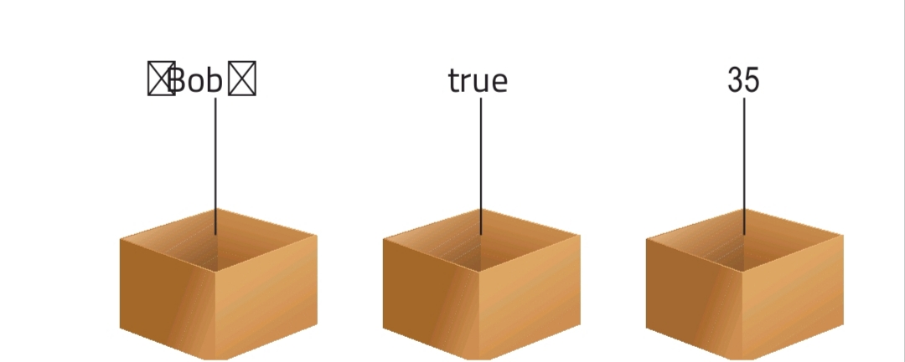
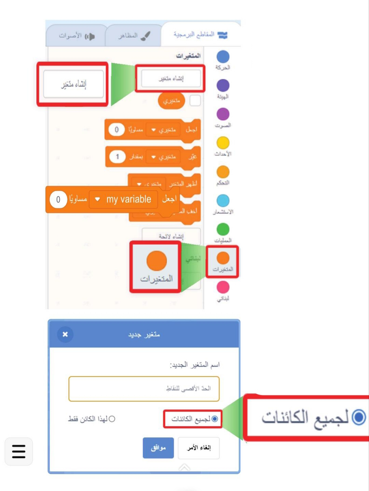
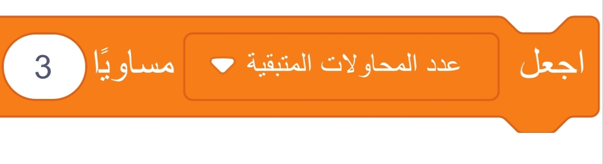
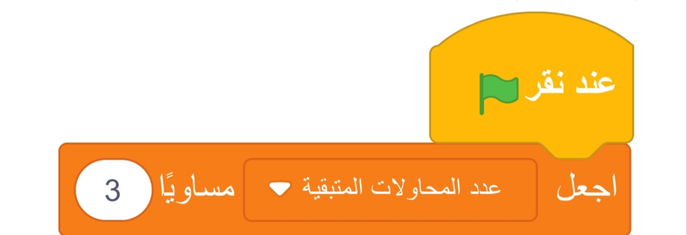
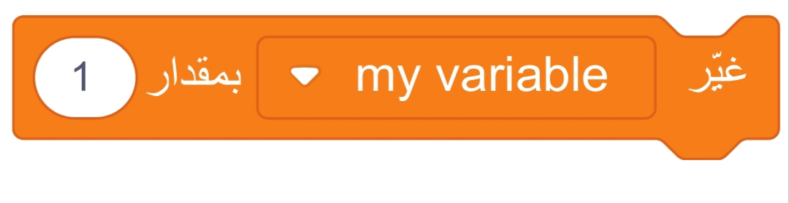
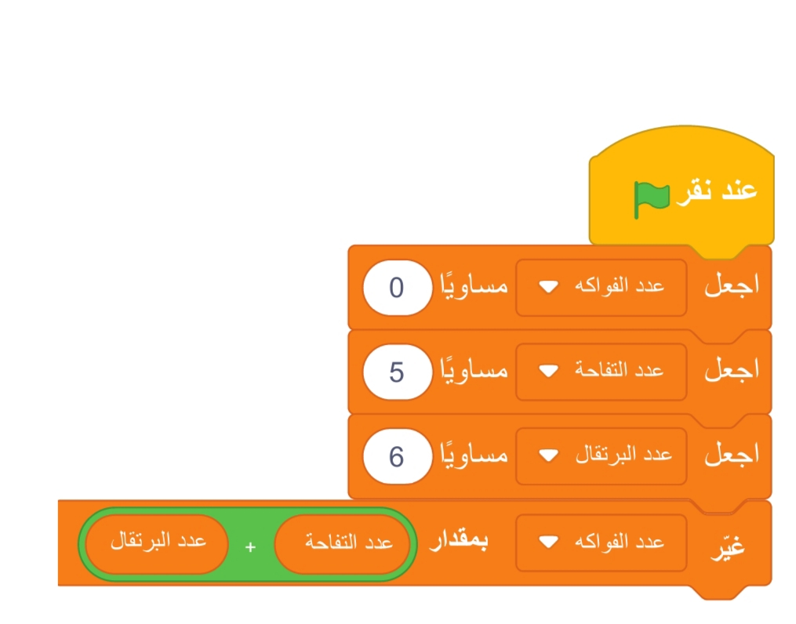
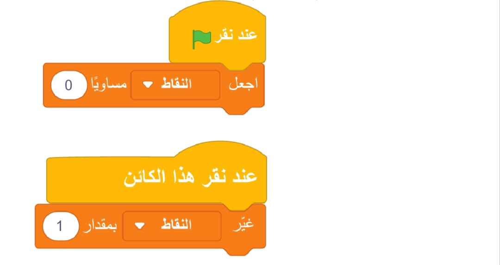

وضح المقصود بخاصية المزج (Remix) في برمجية سكراتش.
هي خاصية تتيح للمستخدمين استيراد كائنات أو نصوص برمجية من مشروعات أخرى ودمجها بسهولة مع مشروعاتهم الحالية.
مميزات خاصية المزج في برمجية سكراتش
تساعد هذه الميزة على توسيع إمكانات المشروع وتطويره بشكل أسرع، حيث يمكن الاستفادة من الجهود السابقة، وإعادة استخدام الأفكار أو الأكواد المبتكرة؛ مما يوفر الوقت والجهد.
ويمكن استيراد كائنات متعددة بما يتضمن خلفياتها، وأصواتها، وبرمجياتها المرفقة، ثم تعديلها لتتماشى مع فكرتي الخاصة، مما يضمن اندماجها بسلاسة مع مشروعي.
- اسم المتغير.
- قيمة المتغير.
- نوع البيانات.
وضح المقصود باسم المتغير:
هو الاسم الذي يُطلق على المتغير لتمييزه عن غيره من المتغيرات في المشروع، حيث يجب أن يكون واضحًا ومعبرًا عن محتوى المتغير أو وظيفته.
شروط تسمية المتغير
يجب أن يكون واضحًا ومعبرًا عن محتوى المتغير أو وظيفته (مثال: إذا كنا نصمم لعبة عن الكواكب، يمكن تسمية المتغير «عدد الكواكب»).
في البرمجة عمومًا، يجب الالتزام بقواعد معينة لتسمية المتغيرات، تختلف باختلاف لغة البرمجة.
وضح المقصود بقيمة المتغير:
وهي تمثل البيانات أو المعلومات المخزنة داخل المتغير. هذه القيمة قد تتغير في أثناء تشغيل البرنامج بناءً على الأحداث أو العمليات البرمجية.
مثال: إذا بدأ المتغير «عدد النقاط» بقيمة أولية، ثم جمع اللاعب نقطة، يتم تحديث القيمة إلى 1.
وضح المقصود بنوع البيانات:
يشير إلى طبيعة القيمة التي سيحتويها المتغير، ويساعد في تحديد كيفية التعامل مع المتغير في أثناء تنفيذ البرنامج.
في برمجية سكراتش Scratch يتميز العمل مع المتغيرات بالبساطة والمرونة، فلا يُطلب تحديد نوع البيانات عند إنشاء المتغير؛ مما يجعل جميع المتغيرات قادرة على تخزين النصوص أو الأعداد تلقائيًا حسب الحاجة.
مع ذلك، هناك ثلاثة أنواع بيانات رئيسة يتم استخدامها غالبًا في مشروعات سكراتش:

الأعداد (Numbers)
تُستخدم لتخزين القيم العددية التي يمكن التعامل معها في العمليات الحسابية (مثل: جمع النقاط في الألعاب، وحساب الزمن، وعدد المحاولات)، يمكن أن تكون الأعداد في سكراتش صحيحة مثل (1، 5، 10) أو عشرية مثل (2.5، 3.14).
مثل تعريف متغير «النقاط» لتخزين عدد النقاط التي يجمعها اللاعب في أثناء اللعبة.
النصوص (Strings)
تُستخدم لتخزين النصوص التي تتكون من أحرف وأرقام ورموز، مثل متغير «رسائل» لعرض رسائل على الشاشة (مثل «أحسنت!»).
ومتغير «اسم اللاعب» لتخزين الاسم الذي يُظهره البرنامج عند بدء اللعبة أو عند عرض النتائج.
القيم المنطقية باستخدام المتغيرات (Boolean-like values)
في حين أن سكراتش لا يدعم القيم المنطقية (True و False) مباشرةً، فيمكن تمثيلها باستخدام الأعداد (على سبيل المثال، يمكن استخدام متغير يحمل قيمة 1 ليمثل «صحيح» وقيمة 0 ليمثل «خطأ») أو النصوص (مثل: «نعم» و«لا»).
هذا النوع من البيانات يُستخدم للتحقق من حالات معينة، مثل: «هل انتهت اللعبة؟» «هل الكائن يلمس الحافة؟»؛ حيث يتم تخزين القيمة بناءً على الشرط، مثل تعريف متغير «الحالة» بحيث يحمل القيمة 1 إذا فاز اللاعب، والقيمة 0 إذا خسر.
تساعد المتغيرات في تخزين القيم التي يمكن استخدامها وتحديثها في أثناء تشغيل المشروع.
عند إنشاء المتغيرات باستخدام فئة «المتغيرات» يمكننا التفريق بين نوعين رئيسين:
- أولًا: المتغيرات الثابتة (Constants).
- ثانيًا: المتغيرات الديناميكية (Dynamic Variables).
وضح المقصود بالمتغيرات الثابتة (Constants) وأعط مثالًا عليها.
قيم هذه المتغيرات لا تتغير في أثناء تشغيل المشروع، وتستخدم لتخزين معلومات ثابتة. يساعد هذا النوع من المتغيرات في تخزين المعلومات التي نحتاجها في مختلف أجزاء البرنامج من دون الحاجة لتعديلها، مثل تخزين قيمة قصوى للنقاط، أو تخزين اسم اللعبة أو الرسائل الثابتة.
مثل تعريف متغير «الحد الأقصى للنقاط» يحتفظ بقيمة 100 لتحديد الفوز في اللعبة.
خطوات إنشاء متغير ثابت في سكراتش (Scratch)
- في نافذة اللبنات البرمجية، أختار فئة المتغيرات (Variables)، ثم أنقر على زر «إنشاء متغير» (Make a Variable).
- أدخل اسمًا مناسبًا للمتغير، يعكس وظيفته بوضوح، مثل «الحد الأقصى للنقاط».
- أختار «لجميع الكائنات» (For All Sprites) لجعل المتغير متاحًا لجميع الكائنات في المشروع.
- لإعطاء المتغير قيمة ابتدائية، أضيف لبنة «اجعل [اسم المتغير] مساويًا [قيمة]».
- أضع هذه اللبنة في بداية النص البرمجي (أسفل لبنة «عند النقر على العلم الأخضر»).
- أدخل القيمة التي أريدها كقيمة ثابتة للمتغير، مثل: 100 كحد أقصى للنقاط.
- أستخدم المتغير ضمن النصوص البرمجية للتحقق من الشروط، أو مقارنة القيم من دون تغييرها في أثناء تشغيل البرنامج.

مثال
لإنشاء متغير يُسمى «عدد المحاولات المتبقية» ويُضبط إلى 3. هذا يعني أن اللاعب لديه 3 محاولات فقط، وهذه القيمة لا تتغير في أثناء اللعب. أنفذ الخطوات الآتية:
أعمل على إنشاء متغير اسمه «عدد المحاولات المتبقية»، وأجعل المتغير متاحًا لجميع الكائنات.

أضيف اللبنة: «اجعل [عدد المحاولات المتبقية] مساويًا [3]».
عند النقر على العلم الأخضر: يقوم الكود بإعادة ضبط اللعبة، وضبط عدد المحاولات المتاحة إلى 3 وعرض عدد المحاولات المتبقية.

وضح المقصود بالمتغيرات الديناميكية (Dynamic Variables).
هي نوع من المتغيرات يمكن تعديل قيمتها في أثناء تشغيل البرنامج؛ حيث تتغير بناءً على التفاعلات والأحداث التي تحدث خلال التنفيذ. هذا النوع يتميز بمرونته وقدرته على التحديث الديناميكي وفقًا لمنطق البرمجة.
أمثلة على استخدامات المتغيرات المتغيرة:
- تتبع النقاط في الألعاب: يتم تحديث النقاط عند تحقيق إنجاز معين أو مواجهة عقبة.
- حساب الوقت: تُستخدم لتسجيل الوقت المتبقي أو الزمن المستغرق لإتمام المهمة.
- إدارة المستويات: تتغير قيم المتغيرات للإشارة إلى مستوى اللعبة الحالي.
- متابعة الحالات: تُستخدم للإشارة إلى حالات معينة، مثل «تم النقر على الكائن» أو «اللعبة انتهت».
خطوات إنشاء المتغيرات الديناميكية في سكراتش (Scratch)
- افتح برنامج سكراتش وانتقل إلى فئة «المتغيرات» في شريط اللبنات.
- انقر على زر «إنشاء متغير» (Make a Variable).
- اختر اسمًا للمتغير بما يعكس وظيفته، مثل «النقاط»، «الوقت»، أو «المستوى الحالي».
- حدد النطاق حسب الحاجة.

- أختار «لجميع الكائنات» إذا كان المتغير مشتركًا بين جميع الكائنات.
- أختار «لهذا الكائن فقط» إذا كان المتغير مخصصًا لكائن واحد.
- أحدد القيمة الابتدائية للمتغير باستخدام لبنة «اجعل [اسم المتغير] مساويًا [قيمة]».
- أستخدم كتلًا مثل «غيّر [اسم المتغير] بمقدار [قيمة]» لتعديل قيمة المتغير في أثناء تنفيذ البرنامج.
مثال (1)
لنفترض أن لدينا متغيرين «عدد التفاح» و«عدد البرتقال»، وأنني أريد حساب عدد الفواكه، سأقوم بحساب «المجموع» باستخدام العمليات الحسابية.
في هذا المثال، قمت بإنشاء 3 متغيرات هي: عدد الفواكه، وعدد التفاح، وعدد البرتقال. وقمت بتعيين قيم أولية لكل متغير بالقيم الآتية على التوالي: صفر، 5 و6. ثم قمت بتعديل قيمة عدد الفواكه، ليُحسب مجموع عدد التفاح والبرتقال عن طريق إضافة المتغيرات «عدد التفاح» و«عدد البرتقال» باستخدام لبنة عملية الجمع.

مثال (2)
إضافة متغير لتمثيل تحصيل النقاط في الألعاب: في برمجة الألعاب، يتم استخدام متغير لتمثيل النقاط أو الإنجازات. هذا المتغير يمثل عدد النقاط التي يجمعها اللاعب خلال اللعب، ويتغير بناءً على أدائه.
أفترض أنني أريد إضافة متغير باسم «النقاط» ويتم تحديثه بزيادة قيمته كلما نقر اللاعب الكائن في اللعبة.
يمكنني تنفيذ ذلك باستخدام المقطع البرمجي الآتي:

هذا المثال، يبدأ اللاعب اللعبة مع 0 نقاط، وعند نقر الكائن، تزداد قيمة النقاط بمقدار 1.
إظهار المتغيرات وإخفاؤها: أناقش زملائي في الأسئلة الآتية:
- كيف يمكنني إخفاء أحد المتغيرات أو كلها من شاشة العرض؟
- ما الفائدة من عرض هذه المتغيرات؟
- ما المتغيرات التي ترى أنها ضرورية للعرض في أثناء تشغيل المشروع؟
- ما نتوصل إليه من نتائج مع المجموعات الأخرى.
1. كيف يمكنني إخفاء أحد المتغيرات أو كلها من شاشة العرض؟
في Scratch يمكن إظهار أو إخفاء المتغيرات من خلال الذهاب إلى لوحة المتغيرات في قسم اللبنات البرتقالية.
بجانب اسم كل متغير يوجد مربع اختيار (✓).
عند إزالة العلامة من المربع يختفي المتغير من شاشة العرض، وعند تفعيلها يظهر.
2. ما الفائدة من عرض هذه المتغيرات؟
- تساعد اللاعب على معرفة مستواه أو تقدمه في اللعبة (مثل عدد النقاط).
- تسهل على المبرمج في أثناء التجربة التأكد أن الكود يعمل بشكل صحيح.
- تجعل اللعبة أكثر تشويقًا لأن اللاعب يرى نتيجة أفعاله مباشرة.
3. ما المتغيرات التي ترى أنها ضرورية للعرض في أثناء تشغيل المشروع؟
- في لعبة النقاط، عرض النقاط مهم حتى يعرف اللاعب نتيجته.
- إذا كان هناك عداد وقت أو المحاولات المتبقية، يفضل إظهارها أيضًا.
- لكن المتغيرات الداخلية (مثل متغيرات مساعدة للحساب أو للتجارب) ليست ضرورية للعرض.
4. ما نتوصل إليه من نتائج مع المجموعات الأخرى؟
- يمكن عرض المتغيرات التي تعطي معلومة مباشرة للاعب مثل النقاط أو الوقت.
- إخفاء المتغيرات الخاصة بالبرمجة الداخلية حتى لا تربك اللاعب.
- عرض المتغيرات يزيد التفاعل والمتعة، لكن يجب أن يكون بقدر معقول حتى لا تمتلئ الشاشة بأرقام غير مفهومة.